Projects
Principal Projects
License Plate Detector
Real-time pipeline for license-plate detection, multi-object tracking and OCR, with an interactive UI and a fully reproducible, production-oriented setup.
- Object Detection (YOLOv8)
- Image labeling and augmentation
- Model training on custom dataset
- Edge processing (NCNN export)
- Tracking (Deep SORT)
- OCR (EasyOCR)
- Gradio UI
- Python
- Testing and Coverage
- Clean Code and Project Structure
- Docker
- GitHub Actions CI
- Sphinx Docs
AutoCBC
Automated blood cell counting using AI-analyzes blood smear microscopy images to detect, count, and segment red blood cells, white blood cells, and platelets. Two-stage pipeline combining YOLO object detection with SAM2 segmentation delivers results in seconds with interactive visualization and comprehensive statistics.
- Computer Vision
- Object Detection
- Instance Segmentation
- Streamlit UI
- Docker
OpenGPT Chat
Local AI chat platform that lets you talk to your own large language model with access to tools and your private documents-fully offline and self-hosted. It integrates local LLMs, vector databases, workflow automation, and a conversational UI into a unified stack with RAG, agentic AI, and voice capabilities-all powered by open-source components via Docker Compose.
- Local LLM Inference (Ollama)
- Retrieval-Augmented Generation (RAG)
- Agentic AI
- Vector Database (Qdrant)
- Workflow Automation (n8n)
- Conversational UI (Open WebUI)
- PostgreSQL
- Docker Compose

Resume Refiner Crew
AI-powered resume optimization using multi-agent intelligence. Seven specialized CrewAI agents collaborate to transform your resume into a job-specific, ATS-optimized document with Harvard-style PDF formatting-analyzing job fit, incorporating keywords, fact-checking content, and controlling length while maintaining truthfulness.
- Multi-Agent Systems (CrewAI)
- LLM API interaction (OpenAI)
- Resume Parsing & Optimization
- LaTeX PDF Generation
- Streamlit UI
- Docker
Interactive Adventure Generator
Agentic storytelling app where an LLM narrates a branching adventure and adapts the plot to the player's choices. Supports bilingual (EN, SPA) voice & text interaction, streaming responses, and configurable model providers (API Key or local).
- LLM API interaction
- Prompting
- Agentic flow (LangChain)
- TTS (Piper)
- STT (Whisper)
- Gradio UI
Health Anomaly Detector
A wearable-style monitoring system that generates synthetic vitals, applies unsupervised anomaly detection tailored to each user, and streams results into Grafana dashboards-built with a production-ready architecture using a metrics collection agent and a time-series database for persistence.
- Anomaly Detection (unsupervised learning)
- REST API
- Streamlit UI
- TIG stack (Telegraf, InfluxDB, Grafana)
- Docker Compose
- AWS Deployment
- Project management (GitHub Projects)
Lunar Lander RL Controller
Interactive application combining deep reinforcement learning with human control in Gymnasium's LunarLander-v3 environment. Features a pre-trained Deep Q-Network agent that learned optimal landing strategies through 1M training timesteps, alongside manual control mode with seamless AI-human switching via terminal interface.
- Reinforcement Learning (DQN)
- Gymnasium
- Stable-Baselines3
- Terminal UI
- Docker
Whisper Studio
Graphical interface for OpenAI's Whisper speech-to-text engine. Transcribe and translate audio/video files locally with support for 99 languages, 6 model sizes, microphone recording, and multiple output formats (txt, srt, vtt, json)-all processing happens on-device with no external APIs.
- NLP: Speech-to-Text (Whisper)
- Streamlit UI
- Docker
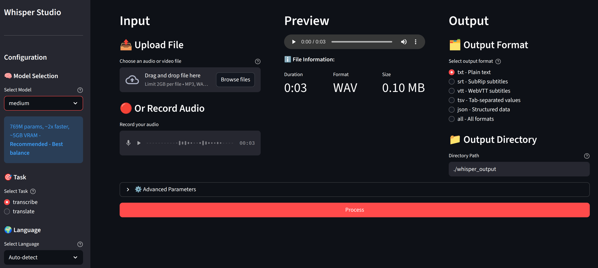
WeatherFlow
Docker-based Apache Airflow pipeline that orchestrates real-time weather data collection and processing. Implements a complete ETL workflow with API monitoring sensors, data extraction from OpenWeatherMap, transformation into normalized database structures, and bulk loading into PostgreSQL-running automatically every 10 minutes with failure handling and duplicate prevention.
- Apache Airflow
- ETL & Data Engineering
- Docker & Docker Compose
- SQL
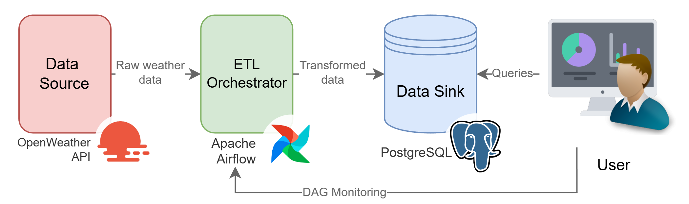
CNN Digits Detector
Interactive handwritten digit recognition system featuring a carefully regularized Convolutional Neural Network trained on the MNIST dataset with image augmentations. Provides real-time inference through an intuitive Gradio sketchpad interface-achieving 99.49% accuracy on test data.
- Deep Learning (CNN)
- Image Classification
- TensorFlow
- PyTorch
- Gradio
- Docker
WeatherFlow
Docker-based Apache Airflow pipeline that orchestrates real-time weather data collection and processing. Implements a complete ETL workflow with API monitoring sensors, data extraction from OpenWeatherMap, transformation into normalized database structures, and bulk loading into PostgreSQL-running automatically every 10 minutes with failure handling and duplicate prevention.
- Apache Airflow
- ETL & Data Engineering
- Docker & Docker Compose
- SQL
Survival Probability Simulator
Interactive machine-learning application that predicts survival probability based on an individual’s demographic and socioeconomic factors. Features a trained Random Forest classifier with real-time predictions in a Streamlit UI, comprehensive exploratory data analysis with interactive visualizations, and a production-ready data pipeline-complete with Docker deployment for seamless containerization.
- Machine Learning (Classification)
- Streamlit UI
- EDA & ETL
- Docker
Household Energy Forecasting
Forecasts household electricity consumption using a complete data‑science pipeline-from exploration and preprocessing to model training, comparison, and rigorous evaluation-aimed at improving planning and operational efficiency.
A report in scientific format and presentation are available (Spanish).
- EDA & ETL
- Feature engineering
- Time‑series models: FFNN, Prophet, RF
- Fourier seasonality
- Gradio notebooks
- LaTeX reporting
- Jupyter / Colab
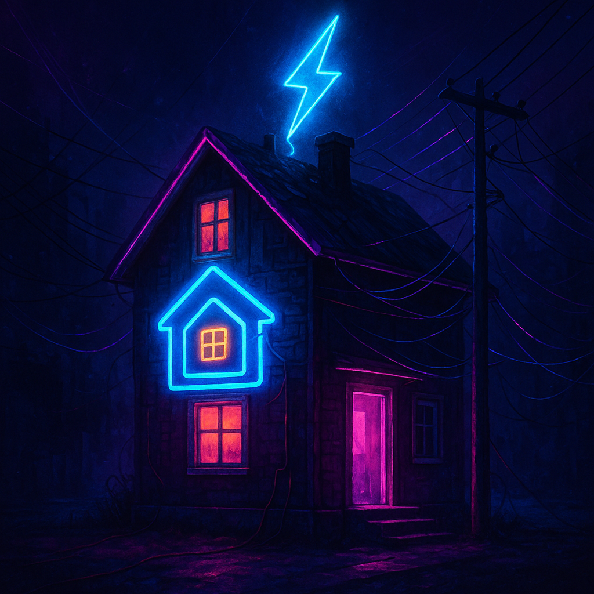
Blood Cells Count Aid
Automated microscopy assistant that detects and counts red blood cells, white blood cells, and platelets in stained blood-smear images, overlaying colour-coded markers in a PyQt5 desktop UI-achieving ≈ 98 % overall counting accuracy versus expert annotations on selected test images.
- Classical Computer Vision
- Colour-plane decomposition
- Histogram equalisation
- Edge detection (Canny)
- Morphological operations
- Adaptive thresholding
- Distance-transform segmentation
- PyQt5 UI
Market-Sentiment Predictor
Pipeline that scrapes finance-related tweets, extracts daily keyword sentiment with RoBERTa (≈ 90 % accuracy), fuses it with index prices to build time-series features, and trains classification/regression models for next-day moves-revealing only 50 % up-vs-down accuracy and underscoring the random-walk nature of the target.
- NLP & Sentiment Analysis
- Web scraping
- Pre-processing
- Transformer sentiment analysis (RoBERTa)
- Time-Series Feature Engineering
- Daily aggregation
- Log-return targets
- Supervised Learning
- Binary classification
- Regression
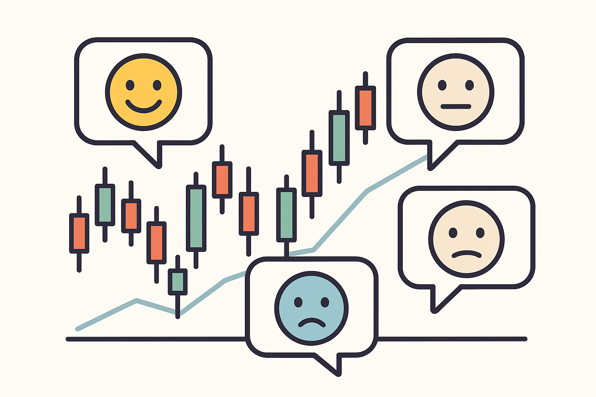
Blood Cells Count Aid
Automated microscopy assistant that detects and counts red blood cells, white blood cells, and platelets in stained blood-smear images, overlaying colour-coded markers in a PyQt5 desktop UI-achieving ≈ 98 % overall counting accuracy versus expert annotations on selected test images.
- Classical Computer Vision
- Colour-plane decomposition
- Histogram equalisation
- Edge detection (Canny)
- Morphological operations
- Adaptive thresholding
- Distance-transform segmentation
- PyQt5 UI
OEE Analytics
Work ProjectEnd-to-end vision solution for a commercial bakery: smart cameras with object detection algorithms and DeepSORT tracking on Raspberry Pi 5 + Hailo edge HW stream MQTT counts to a Grafana OEE dashboard-boosting data-driven productivity across the line.
- Computer vision
- Object detection
- Multi-object tracking (DeepSORT)
- Custom dataset collection & labeling
- Edge AI hardware
- Raspberry Pi 5
- Hailo acceleration
- MQTT messaging
- Grafana dashboards
- 3D printing
- Systems engineering & leadership
- Requirements engineering
- Architecture design
- Team mentoring & project ownership
- Client installation & training
SABIAMar L0 Processor
Work ProjectUpgraded the Level-0 processor-the software responsible for decoding the raw binary image data transmitted by the SABIAMar Earth-observation satellite. Specifically, I implemented the unpacking of data frames across multiple levels-from transport and network protocols, through image and line layers, down to individual pixels-and added telemetry metadata to the resulting files. The Level 0 processor is the first and essential stage in a chain of processors that ultimately produces usable satellite images.
- Python
- Automated testing
- Binary-frame decoding
- Data-pipeline design
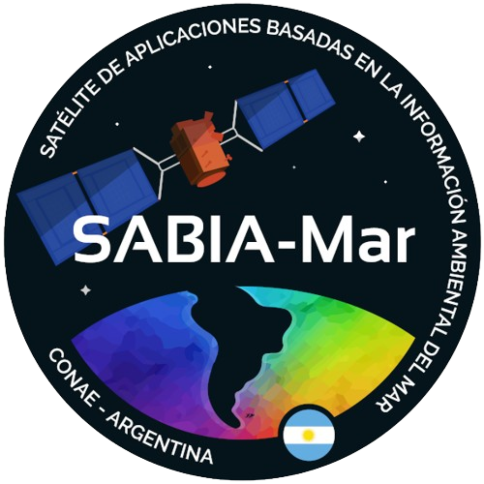
Satellite Crop Detector
Work ProjectPython platform that classifies crop types from time-series of multi-spectral satellite imagery: per-pixel reflectance series are processed with classical computer-vision techniques, engineered into features, and fed to a Random Forest model-reaching a 93 % F1 score.
- Python
- Classical computer vision
- Morphological operations
- Median filtering
- Upscaling / downscaling
- Binary masking
- Geospatial imagery & GIS
- Machine learning
- Time-series feature engineering
- Supervised classification

Poultry Environment Regulator
Automated control system for chick brooders, using a microcontroller to manage heating, ventilation, and lighting schedules. The system is based on an Arduino UNO with DHT11 sensing, RTC time-keeping, and relay-controlled loads. Settings are adjusted via an LCD-encoder menu, with safe defaults restored after power loss.
- Circuit design & implementation
- Arduino programming
- Electronic components
- Arduino
- DHT11 temperature-humidity sensor
- Real-time clock (RTC)
- Relay modules
- LCD display
- Rotary encoder + push-button
- Status LEDs
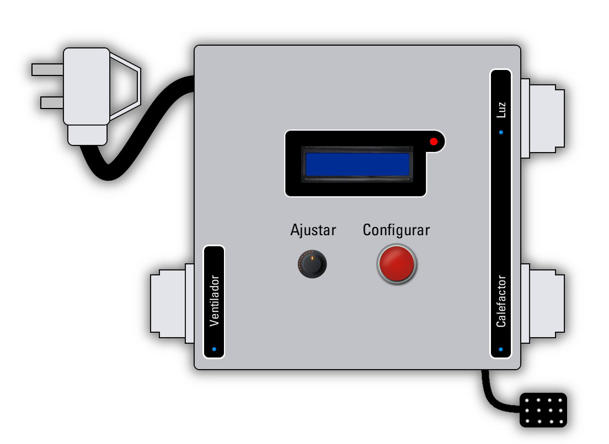


Tablet-Joystick Dock
Custom 3D-printed add-on that clamps a joystick to a tablet while rerouting power, audio and volume controls through internal USB / 3.5 mm extensions and a dual-button circuit-restoring full charging, headphone and volume functionality during gameplay.
- 3D design
- 3D printing
- Electronics prototyping
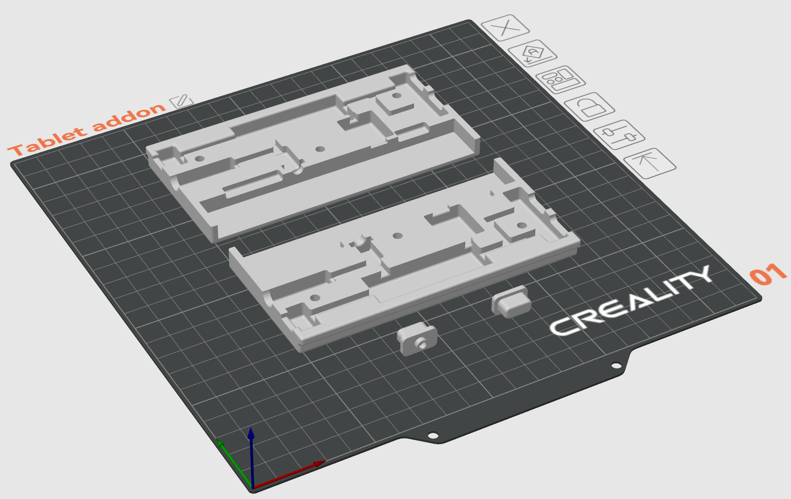
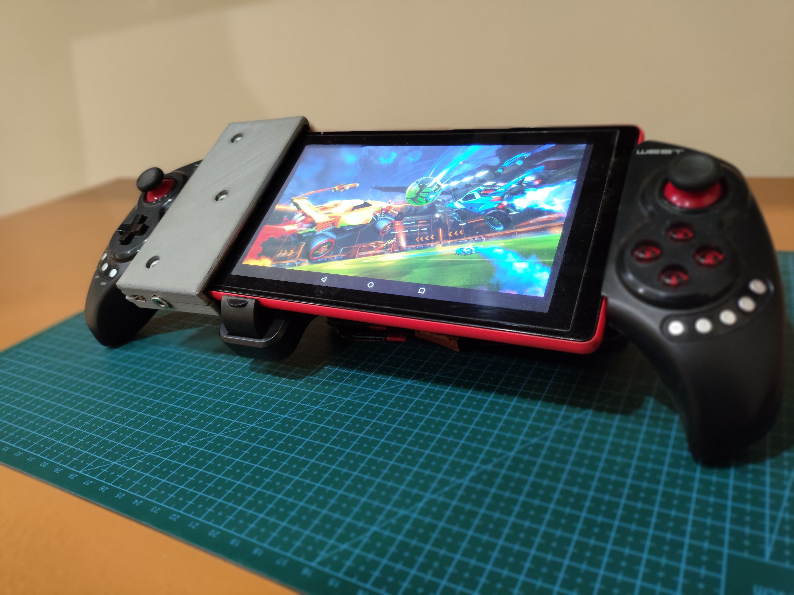
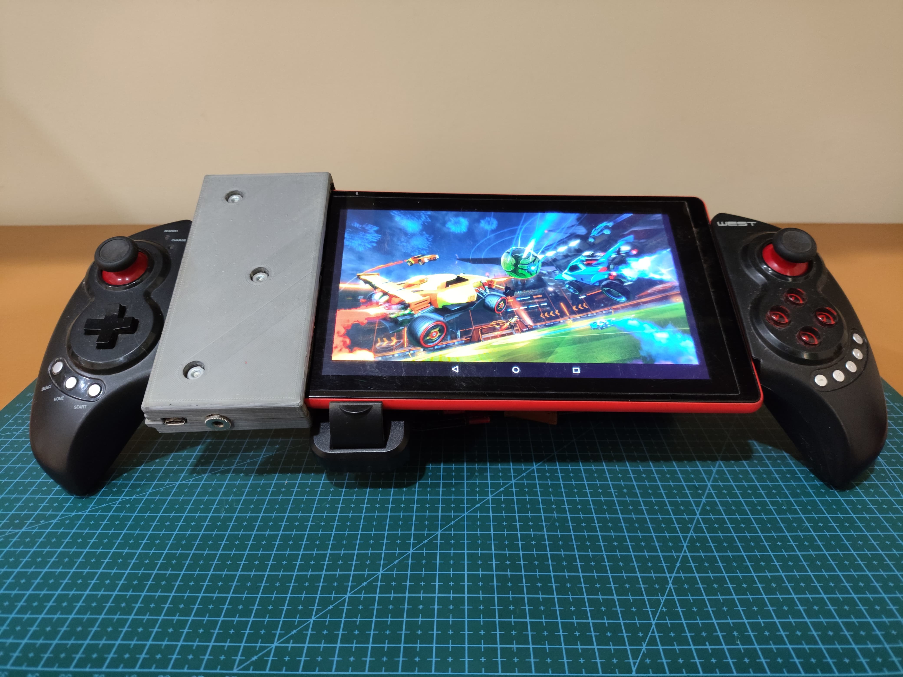
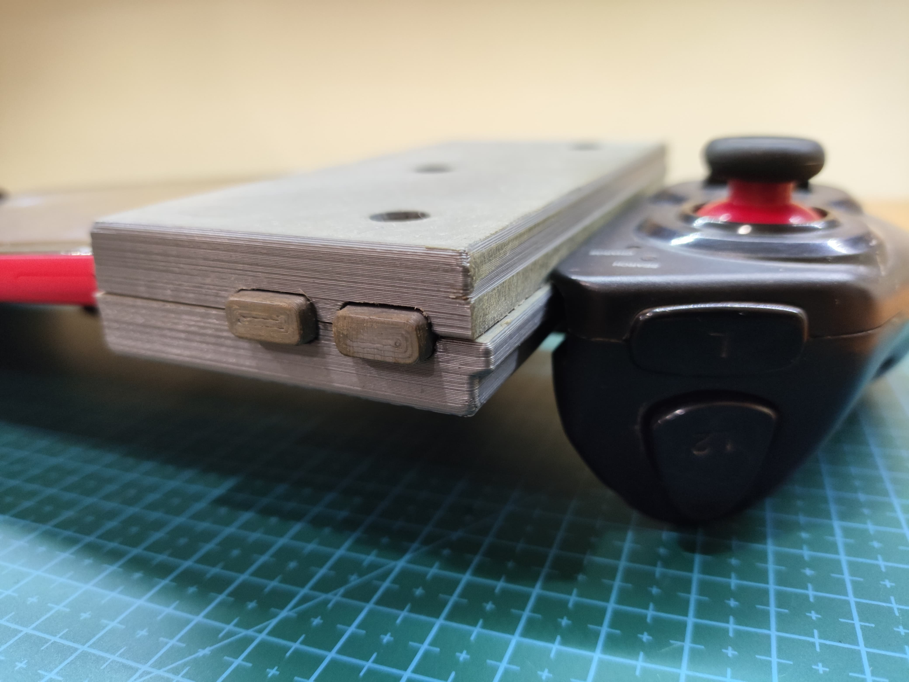
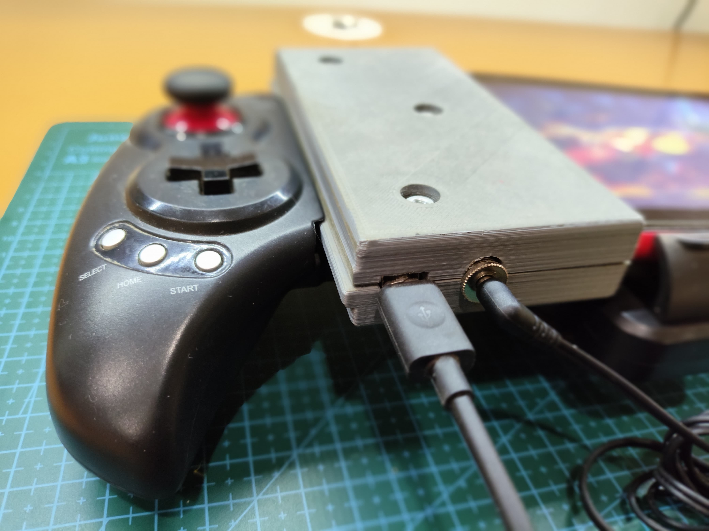
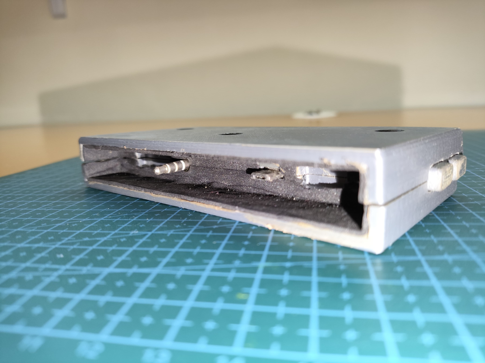
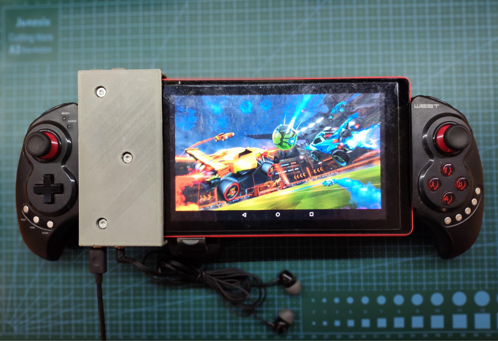
Certifications
-
Machine Learning Specialization
Stanford University - 2025
-
University Diploma in Data Science
MundosE & National University of Córdoba (UNC) - 2024
-
First Certificate in English (FCE)
University of Cambridge - 2017
Official level: B2 • Current proficiency: C1.
-
Telecommunications Engineer
Universidad Nacional de Río Cuarto - 2013–2022
Specialization: Radio Communications • GPA: 8.71.
About Me
I apply Python, Computer Vision, and Machine Learning to solve real‑world problems and deliver reliable AI systems. My work ranges from extracting actionable insights from satellite imagery to deploying edge based computer vision systems in manufacturing. Continuous learning is central to how I work, and I share my projects openly so others can build faster.
Download CVGet in Touch
If you are exploring practical AI for vision or data‑driven products-and value production‑ready, maintainable solutions-I'd be happy to connect. The quickest way to reach me is by email.
marcomongi@gmail.com